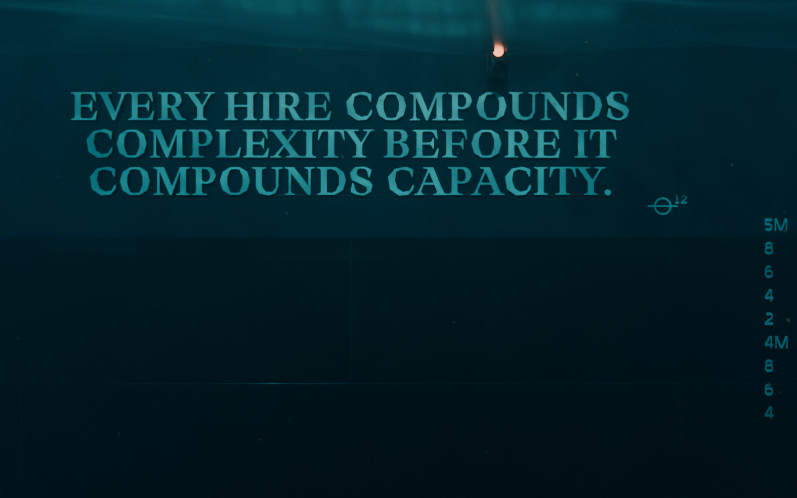

Scaling Up‑Side‑Down
The book
SUSD Bootloader
Get it free
The Bootloader asks How many people are on your team?
39people
741coordination pathways
Graveyard 15–39
The Graveyard is not a temporary problem. It's a structural trap.
Complexity > Capacity = Redline.
The business is drowning. Every addition makes it worse.